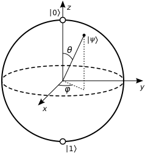

Qubity: základní stavební jednotka
Na rozdíl od klasických bitů, které mohou být buď 0 nebo 1, qubit může být současně v obou stavech díky jevu zvanému superpozice. To umožňuje kvantovým počítačům zpracovávat obrovské množství informací paralelně.
Zdroj obrázku: Wikimedia Commons
Superpozice a provázání
Superpozice umožňuje qubitu být ve více stavech najednou. Provázání (entanglement) propojuje dva qubity tak, že změna jednoho okamžitě ovlivní druhý, bez ohledu na vzdálenost.
Výpočetní modely
Existuje několik přístupů ke kvantovému výpočtu, například:
🔹 Kvantové hradlové modely
🔹 Adiabatické kvantové výpočty
🔹 Kvantové simulace